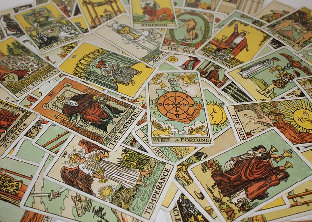
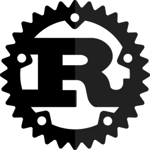

In this presentation I attempt to find how reliable tarot readings can be.
I do this by examing the probability behind tarot draws and the meanings
behind the cards. After this I show how knowing the probability of card
draws can influence the outcome of predictions in a love or career
reading. This shows how card readers can often be mathematicians as
well as seers or fortune tellers.

In this presentation I give a crash course in the basics of Rust
programming language. I cover a number of the basic concepts in Rust
that make it unique such as shadowing and ownership. Due to the
structure of Rust it is much more memory safe than other programming
languages like c that allow for unsafe memory addressing. To demonstrate
the language I also show a simple example program written in Rust.